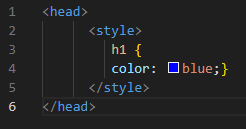
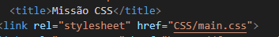
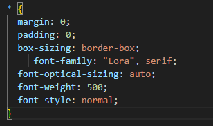

O estilo é aplicado diretamente dentro da tag HTML.
Ex:
O estilo é definido dentro da tag style, no head, dentro do HTML.
Ex:
O arquivo é separado e linkado ao HTML, facilitando a perfomance, limpeza e deixando de facil manutenibilidade o código, sendo a opção mais optada por empresas
Ex: No Head do HTML
Ex: No Arquivo CSS
